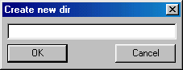

Web Site Replicator v1.0
Created by Lv 'Zetalog' Zheng of eZyScripts.Com
FTP Tutorial - Creating Directories
Creating directories on your web server with CuteFTP is very easy. Near the right end of the toolbar there is
a button that looks like . To create
a new directory, either click on that button, or go to the menu Commands->Make new directory. A small dialog box will come
up looks like this:

All you have to do, is type in the name of the directory you want to create and hit the OK button. CuteFTP will then
create the new directory on your web server.
< Prev |
Next >